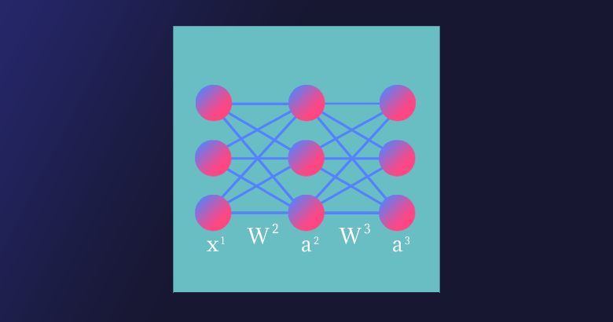

В данной статье мы рассмотрим прямое распространение сигнала и обратное распространение ошибки в полносвязной нейронной сети прямого распространения. В результате получим весь набор формул, необходимых для программной реализации нейронной сети. В завершении статьи рассмотрим численный пример.
«Полносвязная» (fully connected) — означает, что каждый нейрон предыдущего слоя соединён с каждым нейроном следующего слоя. «Прямого распространения» (feedforward) — означает, что сигнал проходит через нейронную сеть в одном направлении от входного к выходному слою.
Полносвязная нейронная сеть прямого распространения («перцептрон») — это простейший и наиболее типичный пример искусственной нейронной сети.
Искусственная нейронная сеть является математической функцией, а точнее — композицией (суперпозицией) функций. Было доказано (George Cybenko, 1989), что полносвязная нейронная сеть прямого распространения с хотя бы одним скрытым слоем и достаточным количеством нейронов потенциально может аппроксимировать любую непрерывную функцию, т.е. по своей сути она — универсальный аппроксиматор.
«Свойства универсальной аппроксимации встречаются в математике чаще, чем можно было бы ожидать. Например, теорема Вейерштрасса — Стоуна доказывает, что любая непрерывная функция на замкнутом интервале может быть приближена многочленной функцией. Если ослабить наши критерии далее, можно использовать ряды Тейлора и ряды Фурье, предлагающие некоторые возможности универсальной аппроксимации (в пределах их областей схождения). Тот факт, что универсальная сходимость — довольно обычное явление в математике, дает частичное обоснование эмпирического наблюдения, что существует много малых вариантов полносвязных сетей, которые, судя по всему, дают свойство универсальной аппроксимации».
Запишем нейронную сеть, которую мы будем рассматривать в данной статье, в виде функции:
\[\displaylines{\mathbf{a}^3=\mathbf{a}^3(\mathbf{x}^3),\\\mathbf{x}^3=\mathbf{W}^3\times\mathbf{a}^2(\mathbf{x}^2)+\mathbf{b}^3,\\\mathbf{x}^2=\mathbf{W}^2\times\mathbf{x}^1+\mathbf{b}^2,}\]
\[\begin{multline*}\begin{aligned}\displaylines{\begin{array}{l}\text{где }\mathbf{x}^1\text{ — вектор входных значений — первый слой, }\mathbf{x}^1\text{ — второй, скрытый и }\mathbf{x}^3\text{ — третий слои нейронной сети, }\\\mathbf{b}^2,\mathbf{b}^3\text{ — векторы смещений и }\mathbf{W}^2,\mathbf{W}^3\text{ — матрицы весов первого и второго слоёв соответственно, }\mathbf{a}^2\text{ — вектор-функция активации второго слоя,}\\\mathbf{a}^3\text{ — вектор-функция активации третьего, последнего слоя и, соответственно, вектор выходных значений нейронной сети.}\end{array}}\end{aligned}\end{multline*}\]
\[\begin{multline*}\begin{aligned}\displaylines{\begin{array}{l}\text{Мы будем использовать принятую в литературе по нейронам сетям запись }{\mathbf{W}}\times{\mathbf{x},}\text{ где }\mathbf{x}\\\text{ — вектор-столбец (в литературе по математике под векторомстандартно (по умолчанию) понимается вектор-столбец). Произведение матриц }{\mathbf{A}}\times{\mathbf{B}}\\\text{ определено, если число столбцов }\mathbf{A}\text{ равно числу строк }\mathbf{B}.\text{Таким образом число столбцов }j\text{ матрицы }\mathbf{W}_{ij}\text{ равно числу строк }i\text{ векторов }\mathbf{x}\text{ и }\mathbf{a}.\end{array}}\end{aligned}\end{multline*}\]
Для комфортного чтения статьи необходимо обладать некоторым знанием линейной алгебры (обязательный минимум — операции над матрицами), производной сложной функции и частных производных.
Нейронная сеть имеет три слоя с тремя нейронами в каждом из них. Нелинейное изменение проходящего через сеть сигнала обеспечивает функция активации сигмоид (sigmoid) на скрытом и выходном слоях:
\[f(x)=\frac{1}{1+e^{-x}}.\]
Поскольку на практике большинство реальных данных имеют нелинейный характер, используются нелинейные функции активации, позволяющие извлекать нелинейные зависимости в данных.

Перепишем уравнение рассматриваемой сети для заданных параметров:
\[\mathbf{a}^3=f(\mathbf{x}^3)=f\left(\left[\begin{matrix}w_{11}^3&w_{12}^3&w_{13}^3\\w_{21}^3&w_{22}^3&w_{23}^3\\w_{31}^3&w_{32}^3&w_{33}^3\\\end{matrix}\right]\times\mathbf{a}^2+\left[\begin{matrix}b_1^3\\b_2^3\\b_3^3\\\end{matrix}\right]\right),\]
\[\mathbf{a}^2=f(\mathbf{x}^2)=f\left(\left[\begin{matrix}w_{11}^2&w_{12}^2&w_{13}^2\\w_{21}^2&w_{22}^2&w_{23}^2\\w_{31}^2&w_{32}^2&w_{33}^2\\\end{matrix}\right]\times\left[\begin{matrix}x_1^1\\x_2^1\\x_3^1\\\end{matrix}\right]+\left[\begin{matrix}b_1^2\\b_2^2\\b_3^2\\\end{matrix}\right]\right).\]
\[\begin{multline*}\begin{aligned}\displaylines{\begin{array}{l}\text{Функция активации }a\text{ поэлементно применяется к каждому элементу соответствующего вектора }\mathbf{x}.\end{array}}\end{aligned}\end{multline*}\]
Запишем уравнения для прямого прохождения сигнала через нейронную сеть:
\[\displaylines{a_1^2=\ f(x_1^2)\ =\ f(w_{11}^2x_1^1+w_{12}^2x_2^1+w_{13}^2x_3^1+b_1^2),\\a_2^2=\ f(x_2^2)\ =f(w_{21}^2x_1^1+w_{22}^2x_2^1+w_{23}^2x_3^1+b_2^2),\\a_3^2=\ \ f(x_3^2)\ =f(w_{31}^2x_1^1+w_{32}^2x_2^1+w_{33}^2x_3^1+b_3^2);\\a_1^3=\ f(x_1^3)\ =\ f(w_{11}^3a_1^2+w_{12}^3a_2^2+w_{13}^3a_3^2+b_1^3),\\a_2^3=\ f(x_2^3)\ =f(w_{21}^3a_1^2+w_{22}^3a_2^2+w_{23}^3a_3^2+b_2^3),\\a_3^3=\ \ f(x_3^3)\ =f(w_{31}^3a_1^2+w_{32}^3a_2^2+w_{33}^3a_3^2+b_3^3)}\]
и функцию стоимости (cost function)
\[Cost\left(y_i,a_i^3\right)=\frac{1}{n}\sum_{i=1}^{n}{\left(y_i-a_i^3\right)^2{\rightarrow}min},\]
\[\begin{multline*}\begin{aligned}\displaylines{\begin{array}{l}\text{где }i\text{ — номер соответствующего целевого }y_i\text{ (вектора }\mathbf{y}\text{) и выходного }a_i^3\text{ значений, }n\text{ — число выходных значений.}\end{array}}\end{aligned}\end{multline*}\]
Таким образом, функция стоимости для нашей нейронной сети в развёрнутом виде:
\[C(y_i,a_i^3)=\frac{1}{3}(\left(y_1-a_1^3\right)^2+\left(y_2-a_2^3\right)^2+\left(y_3-a_3^3\right)^2).\]
Функция стоимости показывает нам насколько сильно отличаются текущие значения нейронной сети от целевых.
В сущности, для реализации алгоритма обратного распространения ошибки используется довольно простая идея.
\[\begin{multline*}\begin{aligned}\displaylines{\begin{array}{l}\text{Градиент (в общем случае) — вектор, определяющий направление наискорейшего роста функции нескольких переменных. Вычитая из текущих значений весов и смещений соответствующие значения частных производных как элементов градиента функции стоимости }\nabla{C}\text{ мы будем приближаться к одному из ближайших (относительно начальной точки) минимумов функции стоимости и, таким образом, уменьшать величину ошибки. Согласно необходимому условию экстремума, в точках экстремума функции многих переменных её градиент равен нулю, }\nabla{C}=0.\end{array}}\end{aligned}\end{multline*}\]
Этот подход называется алгоритмом градиентного спуска. Иногда может возникать путаница или отождествление этих двух алгоритмов, поскольку они тесно взаимосвязаны и один используется для реализации другого.
Несмотря на простоту и эффективность, алгоритм градиентного спуска в общем случае имеет свои ограничения, например, седловая точка, локальный минимум, перетренировка (overtraining) (попадание в глобальный минимум).
\[\begin{multline*}\begin{aligned}\displaylines{\begin{array}{l}\text{Найдём частные производные по всем элементам матрицы }\mathbf{W}^2:\end{array}}\end{aligned}\end{multline*}\]
\[\displaylines{\frac{\partial C(y_i, a_i^3)}{\partial\mathbf{W}^3}=\frac{1}{3}\sum_{i=1}^{3}\frac{\partial\left(y_i-a_i^3\right)^2}{\partial\mathbf{W}^3},\\\frac{\partial C(y_i, a_i^3)}{\partial\mathbf{W}^3}=\frac{2}{3}\sum_{i=1}^{3}{\left(y_i-a_i^3\right)\frac{\partial\left(y_i-a_i^3\right)}{\partial\mathbf{W}^3}},\\\frac{\partial C(y_i, a_i^3)}{\partial\mathbf{W}^3}=\frac{2}{3}\sum_{i=1}^{3}\left(y_i-a_i^3\right)\left(\frac{\partial y_i}{\partial\mathbf{W}^3}-\frac{\partial a_i^3}{\partial\mathbf{W}^3}\right),}\]
\[\begin{multline*}\begin{aligned}\displaylines{\begin{array}{l}\text{поскольку }y_i\text{— константа, то }\frac{\partial y_i}{\partial\mathbf{W}^3}=0,\end{array}}\end{aligned}\end{multline*}\]
\[\displaylines{\frac{\partial C(y_i, a_i^3)}{\partial\mathbf{W}^3}=-\frac{2}{3}\sum_{i=1}^{3}{\left(y_i-a_i^3\right)\frac{\partial a_i^3}{\partial\mathbf{W}^3}},\\\frac{\partial C(y_i, a_i^3)}{\partial\mathbf{W}^3}=-\frac{2}{3}\sum_{i=1}^{3}{\left(y_i-a_i^3\right)\frac{\partial a_i^3}{\partial x_i^3}}\frac{\partial x_i^3}{\partial\mathbf{W}^3}.}\]
Преобразуем функцию активации сигмоид и найдём её производную:
\[\frac{\partial C(y_i, a_i^3)}{\partial\mathbf{W}^3}=-\frac{2}{3}\sum_{i=1}^{3}{\left(y_i-a_i^3\right)\frac{e^{x_i^3}}{\left(1+e^{x_i^3}\right)^2}}\frac{\partial x_i^3}{\partial\mathbf{W}^3}.\]
В производной по матрице мы находим производную по каждому из её элементов.
\[\text{Раскроем сумму для переменной }w_{11}^3\text{ матрицы}\mathbf{W}^3:\]
\[\frac{\partial C(y_i, a_i^3)}{\partial w_{11}^3}=-\frac{2}{3}(\left(y_1-a_1^3\right)\frac{e^{x_1^3}}{\left(1+e^{x_1^3}\right)^2}\frac{\partial x_1^3}{\partial w_{11}^3}+\left(y_2-a_2^3\right)\frac{e^{x_2^3}}{\left(1+e^{x_2^3}\right)^2}\frac{\partial x_2^3}{\partial w_{11}^3}+\left(y_3-a_3^3\right)\frac{e^{x_3^3}}{\left(1+e^{x_3^3}\right)^2}\frac{\partial x_3^3}{\partial w_{11}^3}).\]
\[\text{Найдём частную производную по переменной }w_{11}^3.\text{ Поскольку}\]
\[\displaylines{x_1^3=w_{11}^3a_1^2+w_{12}^3a_2^2+w_{13}^3a_3^2+b_1^3,\\x_2^3=w_{21}^3a_1^2+w_{22}^3a_2^2+w_{23}^3a_3^2+b_2^3,\\x_3^3=w_{31}^3a_1^2+w_{32}^3a_2^2+w_{33}^3a_3^2+b_3^3,}\]
\[\text{тогда }\frac{\partial C\left(y_i,a_i^3\right)}{\partial w_{11}^3}=-\frac{2}{3}(\left(y_1-a_1^3\right)\frac{e^{x_1^3}}{\left(1+e^{x_1^3}\right)^2}a_1^2+0+0).\]
\[\text{Преобразуем сигмоид и получим окончательную форму выражения для }\frac{\partial C\left(y_i,a_i^3\right)}{\partial w_{11}^3}\]
\[\displaylines{\frac{\partial C\left(y_i,a_i^3\right)}{\partial w_{11}^3}=-\frac{2}{3}\left(y_1-a_1^3\right)\frac{e^{x_1^3}}{\left(1+e^{x_1^3}\right)}{\left(1-\frac{e^{x_1^3}}{1+e^{x_1^3}}\right)}a_1^2\\или \frac{\partial C\left(y_i,a_i^3\right)}{\partial w_{11}^3}=-\frac{2}{3}\left(y_1-a_1^3\right)a_1^3\left(x_1^3\right)\left(1-a_1^3\left(x_1^3\right)\right)a_1^2.}\]
Обратное распространение ошибки является частным случаем автоматического дифференцирования, для реализации которого нам и необходимо привести все вычислительные выражения к определённому виду.
\[\text{Таким же образом для переменных }w_{12}^3\text{ и }w_{13}^3\text{ получим:}\]
\[\displaylines{\frac{\partial C\left(y_i,a_i^3\right)}{\partial w_{12}^3}=-\frac{2}{3}\left(y_1-a_1^3\right)a_1^3\left(x_1^3\right)\left(1-a_1^3\left(x_1^3\right)\right)a_2^2,\\\frac{\partial C\left(y_i,a_i^3\right)}{\partial w_{13}^3}=-\frac{2}{3}\left(y_1-a_1^3\right)a_1^3\left(x_1^3\right)\left(1-a_1^3\left(x_1^3\right)\right)a_3^2.}\]
\[\text{Найдём новые значения (обновлённые веса) для переменных }w_{11}^3,w_{12}^3\text{ и }w_{13}^3:\]
\[\displaylines{^*w_{11}^3=\ w_{11}^3-\eta(-\frac{2}{3}\left(y_1-a_1^3\right)a_1^3\left(x_1^3\right)\left(1-a_1^3\left(x_1^3\right)\right)a_1^2),\\^*w_{12}^3=\ w_{12}^3-\eta(-\frac{2}{3}\left(y_1-a_1^3\right)a_1^3\left(x_1^3\right)\left(1-a_1^3\left(x_1^3\right)\right)a_2^2),\\^*w_{13}^3=\ w_{13}^3-\eta(-\frac{2}{3}\left(y_1-a_1^3\right)a_1^3\left(x_1^3\right)\left(1-a_1^3\left(x_1^3\right)\right)a_3^2),}\]
\[\text{где }\eta\text{ (и́та) — буква греческого алфавита, обычно используемая для обозначения скорости обучения (learning rate), её значение должно быть установлено на промежутке от 0 до 1; * — новое значение переменной.}\]
\[\text{Найдём остальные частные производные для матрицы }\mathbf{W}^3\text{. Раскроем сумму для }w_{21}^3:\]
\[\frac{\partial C\left(y_i,a_i^3\right)}{\partial w_{21}^3}=-\frac{2}{3}(\left(y_1-a_1^3\right)\frac{e^{x_1^3}}{\left(1+e^{x_1^3}\right)^2}\frac{\partial x_1^3}{\partial w_{21}^3}+\left(y_2-a_2^3\right)\frac{e^{x_2^3}}{\left(1+e^{x_2^3}\right)^2}\frac{\partial x_2^3}{\partial w_{21}^3}+\left(y_3-a_3^3\right)\frac{e^{x_3^3}}{\left(1+e^{x_3^3}\right)^2}\frac{\partial x_3^3}{\partial w_{21}^3}).\]
\[\text{Найдём частную производную по переменной }w_{21}^3:\]
\[\frac{\partial C\left(y_i,a_i^3\right)}{\partial w_{21}^3}=-\frac{2}{3}(0+\left(y_2-a_2^3\right)\frac{e^{x_2^3}}{\left(1+e^{x_2^3}\right)^2}a_1^2+0).\]
\[\text{Преобразуем сигмоид и получим окончательную форму выражения для }\frac{\partial C\left(y_i,a_i^3\right)}{\partial w_{21}^3}:\]
\[\displaylines{\frac{\partial C\left(y_i,a_i^3\right)}{\partial w_{21}^3}=-\frac{2}{3}\left(y_2-a_2^3\right)\frac{e^{x_2^3}}{\left(1+e^{x_2^3}\right)}{\left(1-\frac{e^{x_2^3}}{1+e^{x_2^3}}\right)a_1^2}\\или \frac{\partial C\left(y_i,a_i^3\right)}{\partial w_{21}^3}=-\frac{2}{3}\left(y_2-a_2^3\right)a_2^3\left(x_2^3\right)\left(1-a_2^3\left(x_2^3\right)\right)a_1^2.}\]
\[\text{Таким же образом для переменных }w_{22}^3\text{ и }w_{23}^3\text{ получим:}\]
\[\displaylines{\frac{\partial C\left(y_i,a_i^3\right)}{\partial w_{22}^3}=-\frac{2}{3}\left(y_2-a_2^3\right)a_2^3\left(x_2^3\right)\left(1-a_2^3\left(x_2^3\right)\right)a_2^2,\\\frac{\partial C\left(y_i,a_i^3\right)}{\partial w_{23}^3}=-\frac{2}{3}\left(y_2-a_2^3\right)a_2^3\left(x_2^3\right)\left(1-a_2^3\left(x_2^3\right)\right)a_3^2.}\]
\[\text{Найдём новые значения (обновлённые веса) для переменных }w_{21}^3,w_{22}^3\text{ и }w_{23}^3:\]
\[\displaylines{^*w_{21}^3=\ w_{21}^3-\eta(-\frac{2}{3}\left(y_2-a_2^3\right)a_2^3\left(x_2^3\right)\left(1-a_2^3\left(x_2^3\right)\right)a_1^2),\\^*w_{22}^3=\ w_{22}^3-\eta(-\frac{2}{3}\left(y_2-a_2^3\right)a_2^3\left(x_2^3\right)\left(1-a_2^3\left(x_2^3\right)\right)a_2^2),\\^*w_{23}^3=\ w_{23}^3-\eta(-\frac{2}{3}\left(y_2-a_2^3\right)a_2^3\left(x_2^3\right)\left(1-a_2^3\left(x_2^3\right)\right)a_3^2).}\]
\[\text{Раскроем сумму для }w_{31}^3:\]
\[\frac{\partial C\left(y_i,a_i^3\right)}{\partial w_{31}^3}=-\frac{2}{3}(\left(y_1-a_1^3\right)\frac{e^{x_1^3}}{\left(1+e^{x_1^3}\right)^2}\frac{\partial x_1^3}{\partial w_{31}^3}+\left(y_2-a_2^3\right)\frac{e^{x_2^3}}{\left(1+e^{x_2^3}\right)^2}\frac{\partial x_2^3}{\partial w_{31}^3}+\left(y_3-a_3^3\right)\frac{e^{x_3^3}}{\left(1+e^{x_3^3}\right)^2}\frac{\partial x_3^3}{\partial w_{31}^3}).\]
\[\text{Найдём частную производную по переменной }w_{31}^3:\]
\[\frac{\partial C\left(y_i,a_i^3\right)}{\partial w_{31}^3}=-\frac{2}{3}(0+0+\left(y_3-a_3^3\right)\frac{e^{x_3^3}}{\left(1+e^{x_3^3}\right)^2}a_1^2).\]
\[\text{Преобразуем сигмоид и получим окончательную форму выражения для }\frac{\partial C\left(y_i,a_i^3\right)}{\partial w_{31}^3}:\]
\[\displaylines{\frac{\partial C\left(y_i,a_i^3\right)}{\partial w_{31}^3}=-\frac{2}{3}\left(y_3-a_3^3\right)\frac{e^{x_3^3}}{\left(1+e^{x_3^3}\right)}{\left(1-\frac{e^{x_3^3}}{1+e^{x_3^3}}\right)a_1^2}\\или \frac{\partial C\left(y_i,a_i^3\right)}{\partial w_{31}^3}=-\frac{2}{3}\left(y_3-a_3^3\right)a_3^3\left(x_3^3\right)\left(1-a_3^3\left(x_3^3\right)\right)a_1^2.}\]
\[\text{Таким же образом для переменных }w_{32}^3\text{ и }w_{33}^3\text{ получим:}\]
\[\displaylines{\frac{\partial C\left(y_i,a_i^3\right)}{\partial w_{32}^3}=-\frac{2}{3}\left(y_3-a_3^3\right)a_3^3\left(x_3^3\right)\left(1-a_3^3\left(x_3^3\right)\right)a_2^2,\\\frac{\partial C\left(y_i,a_i^3\right)}{\partial w_{33}^3}=-\frac{2}{3}\left(y_3-a_3^3\right)a_3^3\left(x_3^3\right)\left(1-a_3^3\left(x_3^3\right)\right)a_3^2.}\]
\[\text{Найдём новые значения (обновлённые веса) для переменных }w_{31}^3,w_{32}^3\text{ и }w_{33}^3:\]
\[\displaylines{^*w_{31}^3=\ w_{31}^3-\eta(-\frac{2}{3}\left(y_3-a_3^3\right)a_3^3\left(x_3^3\right)\left(1-a_3^3\left(x_3^3\right)\right)a_1^2),\\^*w_{32}^3=\ w_{32}^3-\eta(-\frac{2}{3}\left(y_3-a_3^3\right)a_3^3\left(x_3^3\right)\left(1-a_3^3\left(x_3^3\right)\right)a_2^2),\\^*w_{33}^3=\ w_{33}^3-\eta(-\frac{2}{3}\left(y_3-a_3^3\right)a_3^3\left(x_3^3\right)\left(1-a_3^3\left(x_3^3\right)\right)a_3^2).}\]
\[\text{Теперь найдём частные производные по всем элементам вектора }\mathbf{b}^3:\]
\[\frac{\partial C\left(y_i,a_i^3\right)}{\partial\mathbf{b}^3}=-\frac{2}{3}\sum_{i=1}^{3}{\left(y_i-a_i^3\right)\frac{e^{x_i^3}}{\left(1+e^{x_i^3}\right)^2}}\frac{\partial x_i^3}{\partial\mathbf{b}^3}.\]
\[\text{Найдём частную производную по }b_1^3:\]
\[\frac{\partial C\left(y_i,a_i^3\right)}{\partial b_1^3}=-\frac{2}{3}(\left(y_1-a_1^3\right)\frac{e^{x_1^3}}{\left(1+e^{x_1^3}\right)^2}\frac{\partial x_1^3}{\partial b_1^3}+\left(y_2-a_2^3\right)\frac{e^{x_2^3}}{\left(1+e^{x_2^3}\right)^2}\frac{\partial x_2^3}{\partial b_1^3}+\left(y_3-a_3^3\right)\frac{e^{x_3^3}}{\left(1+e^{x_3^3}\right)^2}\frac{\partial x_3^3}{\partial b_1^3}),\]
\[\frac{\partial C\left(y_i,a_i^3\right)}{\partial b_1^3}=-\frac{2}{3}(\left(y_1-a_1^3\right)\frac{e^{x_1^3}}{\left(1+e^{x_1^3}\right)^2}1+0+0).\]
\[\text{Преобразуем сигмоид и получим окончательную форму выражения для }\frac{\partial C\left(y_i,a_i^3\right)}{\partial b_1^3}:\]
\[\displaylines{\frac{\partial C\left(y_i,a_i^3\right)}{\partial b_1^3}=-\frac{2}{3}\left(y_1-a_1^3\right)\frac{e^{x_1^3}}{\left(1+e^{x_1^3}\right)}\left(1-\frac{e^{x_1^3}}{1+e^{x_1^3}}\right)1\\или \frac{\partial C\left(y_i,a_i^3\right)}{\partial b_1^3}=-\frac{2}{3}\left(y_1-a_1^3\right)a_1^3\left(x_1^3\right)\left(1-a_1^3\left(x_1^3\right)\right)1.}\]
\[\text{Найдём новое значение для смещения }b_1^3:\]
\[^*b_1^3=\ b_1^3-\eta(-\frac{2}{3}\left(y_1-a_1^3\right)a_1^3\left(x_1^3\right)\left(1-a_1^3\left(x_1^3\right)\right)1).\]
\[\text{Вычислим частные производные по }b_2^3\text{ и }b_3^3:\]
\[\frac{\partial C\left(y_i,a_i^3\right)}{\partial b_2^3}=-\frac{2}{3}(\left(y_1-a_1^3\right)\frac{e^{x_1^3}}{\left(1+e^{x_1^3}\right)^2}\frac{\partial x_1^3}{\partial b_2^3}+\left(y_2-a_2^3\right)\frac{e^{x_2^3}}{\left(1+e^{x_2^3}\right)^2}\frac{\partial x_2^3}{\partial b_2^3}+\left(y_3-a_3^3\right)\frac{e^{x_3^3}}{\left(1+e^{x_3^3}\right)^2}\frac{\partial x_3^3}{\partial b_2^3}),\]
\[\displaylines{\frac{\partial C\left(y_i,a_i^3\right)}{\partial b_2^3}=-\frac{2}{3}(0+\left(y_2-a_2^3\right)\frac{e^{x_2^3}}{\left(1+e^{x_2^3}\right)^2}\frac{\partial x_2^3}{\partial b_2^2}1+0),\\\frac{\partial C\left(y_i,a_i^3\right)}{\partial b_2^3}=-\frac{2}{3}\left(y_2-a_2^3\right)a_2^3\left(x_2^3\right)\left(1-a_2^3\left(x_2^3\right)\right)1.}\]
\[\frac{\partial C\left(y_i,a_i^3\right)}{\partial b_3^3}=-\frac{2}{3}(\left(y_1-a_1^3\right)\frac{e^{x_1^3}}{\left(1+e^{x_1^3}\right)^2}\frac{\partial x_1^3}{\partial b_3^3}+\left(y_2-a_2^3\right)\frac{e^{x_2^3}}{\left(1+e^{x_2^3}\right)^2}\frac{\partial x_2^3}{\partial b_3^3}+\left(y_3-a_3^3\right)\frac{e^{x_3^3}}{\left(1+e^{x_3^3}\right)^2}\frac{\partial x_3^3}{\partial b_3^3}),\]
\[\displaylines{\frac{\partial C\left(y_i,a_i^3\right)}{\partial b_3^3}=-\frac{2}{3}(0+0+\left(y_3-a_3^3\right)\frac{e^{x_3^3}}{\left(1+e^{x_3^3}\right)^2}\frac{\partial x_3^3}{\partial b_3^2}1),\\\frac{\partial C\left(y_i,a_i^3\right)}{\partial b_3^3}=-\frac{2}{3}\left(y_3-a_3^3\right)a_3^3\left(x_3^3\right)\left(1-a_3^3\left(x_3^3\right)\right)1.}\]
\[\text{Найдём новые значения для }b_2^3\text{ и }b_3^3:\]
\[\displaylines{^*b_2^3=\ b_2^3-\eta(-\frac{2}{3}\left(y_2-a_2^3\right)a_2^3\left(x_2^3\right)\left(1-a_2^3\left(x_2^3\right)\right)1),\\^*b_3^3=\ b_3^3-\eta(-\frac{2}{3}\left(y_3-a_3^3\right)a_3^3\left(x_3^3\right)\left(1-a_3^3\left(x_3^3\right)\right)1).}\]
\[\text{Найдём частные производные по всем элементам матрицы }\mathbf{W}^2.\]
\[\text{Раскроем сумму для переменной }w_{11}^2\text{ матрицы }\mathbf{W}^2\text{. Поскольку}\]
\[\displaylines{x_1^3=w_{11}^3a_1^2+w_{12}^3a_2^2+w_{13}^3a_3^2+b_1^3,\\x_2^3=w_{21}^3a_1^2+w_{22}^3a_2^2+w_{23}^3a_3^2+b_2^3,\\x_3^3=w_{31}^3a_1^2+w_{32}^3a_2^2+w_{33}^3a_3^2+b_3^3,}\]
в свою очередь,
\[\displaylines{a_1^2=\ f(x_1^2)\ =\ f(w_{11}^2x_1^1+w_{12}^2x_2^1+w_{13}^2x_3^1+b_1^2),\\a_2^2=\ f(x_2^2)\ =f(w_{21}^2x_1^1+w_{22}^2x_2^1+w_{23}^2x_3^1+b_2^2),\\a_3^2=\ \ f(x_3^2)\ =f(w_{31}^2x_1^1+w_{32}^2x_2^1+w_{33}^2x_3^1+b_3^2),}\]
\[\text{тогда сумма для переменной }w_{11}^2\text{ матрицы }\mathbf{W}^2:\]
\[\frac{\partial C\left(y_i,a_i^3\right)}{\partial w_{11}^2}=-\frac{2}{3}\sum_{i=1}^{3}{\left(y_i-a_i^3\right)\frac{e^{x_i^3}}{\left(1+e^{x_i^3}\right)^2}}\frac{\partial x_i^3}{\partial a_1^2}\frac{\partial a_1^2}{\partial x_1^2}\frac{\partial x_1^2}{\partial w_{11}^2},\]
\[\displaylines{{\begin{gather}\frac{\partial C\left(y_i,a_i^3\right)}{\partial w_{11}^2}=-\frac{2}{3}(\left(y_1-a_1^3\right)\frac{e^{x_1^3}}{\left(1+e^{x_1^3}\right)^2}\frac{\partial x_1^3}{\partial a_1^2}\frac{\partial a_1^2}{\partial x_1^2}\frac{\partial x_1^2}{\partial w_{11}^2}+\left(y_2-a_2^3\right)\frac{e^{x_2^3}}{\left(1+e^{x_2^3}\right)^2}\frac{\partial x_2^3}{\partial a_1^2}\frac{\partial a_1^2}{\partial x_1^2}\frac{\partial x_1^2}{\partial w_{11}^2}\\+\left(y_3-a_3^3\right)\frac{e^{x_3^3}}{\left(1+e^{x_3^3}\right)^2}\frac{\partial x_3^3}{\partial a_1^2}\frac{\partial a_1^2}{\partial x_1^2}\frac{\partial x_1^2}{\partial w_{11}^2}),\\\frac{\partial C\left(y_i,a_i^3\right)}{\partial w_{11}^2}=-\frac{2}{3}(\left(y_1-a_1^3\right)\frac{e^{x_1^3}}{\left(1+e^{x_1^3}\right)^2}w_{11}^3\frac{e^{x_1^2}}{\left(1+e^{x_1^2}\right)}\left(1-\frac{e^{x_1^2}}{1+e^{x_1^2}}\right)x_1^1\\+\left(y_2-a_2^3\right)\frac{e^{x_2^3}}{\left(1+e^{x_2^3}\right)^2}w_{21}^3\frac{e^{x_1^2}}{\left(1+e^{x_1^2}\right)}\left(1-\frac{e^{x_1^2}}{1+e^{x_1^2}}\right)x_1^1\\+\left(y_3-a_3^3\right)\frac{e^{x_3^3}}{\left(1+e^{x_3^3}\right)^2}w_{31}^3\frac{e^{x_1^2}}{\left(1+e^{x_1^2}\right)}\left(1-\frac{e^{x_1^2}}{1+e^{x_1^2}}\right)x_1^1),\\\frac{\partial C\left(y_i,a_i^3\right)}{\partial w_{11}^2}=-\frac{2}{3}(\left(y_1-a_1^3\right)a_1^3\left(x_1^3\right)\left(1-a_1^3\left(x_1^3\right)\right)w_{11}^3a_1^2\left(x_1^2\right)\left(1-a_1^2\left(x_1^2\right)\right)x_1^1\\+\left(y_2-a_2^3\right)a_2^3\left(x_2^3\right)\left(1-a_2^3\left(x_2^3\right)\right)w_{21}^3a_1^2\left(x_1^2\right)\left(1-a_1^2\left(x_1^2\right)\right)x_1^1\\+\left(y_3-a_3^3\right)a_3^3\left(x_3^3\right)\left(1-a_3^3\left(x_3^3\right)\right)w_{31}^3a_1^2\left(x_1^2\right)\left(1-a_1^2\left(x_1^2\right)\right)x_1^1).\end{gather}}}\]
\[\text{Найдём новое значение (обновлённый вес) для переменной }w_{11}^2:\]
\[^*w_{11}^2=\ w_{11}^2-\eta\frac{\partial C\left(y_i,a_i^3\right)}{\partial w_{11}^2}.\]
\[\text{Найдём остальные частные производные и их новые значения для матрицы }\mathbf{W}^2.\]
\[\displaylines{{\begin{gather}\frac{\partial C\left(y_i,a_i^3\right)}{\partial w_{12}^2}=-\frac{2}{3}(\left(y_1-a_1^3\right)a_1^3\left(x_1^3\right)\left(1-a_1^3\left(x_1^3\right)\right)w_{11}^3a_1^2\left(x_1^2\right)\left(1-a_1^2\left(x_1^2\right)\right)x_2^1\\+\left(y_2-a_2^3\right)a_2^3\left(x_2^3\right)\left(1-a_2^3\left(x_2^3\right)\right)w_{21}^3a_1^2\left(x_1^2\right)\left(1-a_1^2\left(x_1^2\right)\right)x_2^1\\+\left(y_3-a_3^3\right)a_3^3\left(x_3^3\right)\left(1-a_3^3\left(x_3^3\right)\right)w_{31}^3a_1^2\left(x_1^2\right)\left(1-a_1^2\left(x_1^2\right)\right)x_2^1).\end{gather}}}\]
\[\displaylines{{\begin{gather}\frac{\partial C\left(y_i,a_i^3\right)}{\partial w_{13}^2}=-\frac{2}{3}(\left(y_1-a_1^3\right)a_1^3\left(x_1^3\right)\left(1-a_1^3\left(x_1^3\right)\right)w_{11}^3a_1^2\left(x_1^2\right)\left(1-a_1^2\left(x_1^2\right)\right)x_3^1\\+\left(y_2-a_2^3\right)a_2^3\left(x_2^3\right)\left(1-a_2^3\left(x_2^3\right)\right)w_{21}^3a_1^2\left(x_1^2\right)\left(1-a_1^2\left(x_1^2\right)\right)x_3^1\\+\left(y_3-a_3^3\right)a_3^3\left(x_3^3\right)\left(1-a_3^3\left(x_3^3\right)\right)w_{31}^3a_1^2\left(x_1^2\right)\left(1-a_1^2\left(x_1^2\right)\right)x_3^1).\end{gather}}}\]
\[^*w_{12}^2=\ w_{12}^2-\eta\frac{\partial C\left(y_i,a_i^3\right)}{\partial w_{12}^2}, ^*w_{13}^2=\ w_{13}^2-\eta\frac{\partial C\left(y_i,a_i^3\right)}{\partial w_{13}^2}.\]
\[\displaylines{{\begin{gather}\frac{\partial C\left(y_i,a_i^3\right)}{\partial w_{21}^2}=-\frac{2}{3}(\left(y_1-a_1^3\right)a_1^3\left(x_1^3\right)\left(1-a_1^3\left(x_1^3\right)\right)w_{12}^3a_2^2\left(x_2^2\right)\left(1-a_2^2\left(x_2^2\right)\right)x_1^1\\+\left(y_2-a_2^3\right)a_2^3\left(x_2^3\right)\left(1-a_2^3\left(x_2^3\right)\right)w_{22}^3a_2^2\left(x_2^2\right)\left(1-a_2^2\left(x_2^2\right)\right)x_1^1\\+\left(y_3-a_3^3\right)a_3^3\left(x_3^3\right)\left(1-a_3^3\left(x_3^3\right)\right)w_{32}^3a_2^2\left(x_2^2\right)\left(1-a_2^2\left(x_2^2\right)\right)x_1^1).\end{gather}}}\]
\[\displaylines{{\begin{gather} \frac{\partial C\left(y_i,a_i^3\right)}{\partial w_{22}^2}=-\frac{2}{3}(\left(y_1-a_1^3\right)a_1^3\left(x_1^3\right)\left(1-a_1^3\left(x_1^3\right)\right)w_{12}^3a_2^2\left(x_2^2\right)\left(1-a_2^2\left(x_2^2\right)\right)x_2^1\\+\left(y_2-a_2^3\right)a_2^3\left(x_2^3\right)\left(1-a_2^3\left(x_2^3\right)\right)w_{22}^3a_2^2\left(x_2^2\right)\left(1-a_2^2\left(x_2^2\right)\right)x_2^1\\+\left(y_3-a_3^3\right)a_3^3\left(x_3^3\right)\left(1-a_3^3\left(x_3^3\right)\right)w_{32}^3a_2^2\left(x_2^2\right)\left(1-a_2^2\left(x_2^2\right)\right)x_2^1).\end{gather}}}\]
\[\displaylines{{\begin{gather}\frac{\partial C\left(y_i,a_i^3\right)}{\partial w_{23}^2}=-\frac{2}{3}(\left(y_1-a_1^3\right)a_1^3\left(x_1^3\right)\left(1-a_1^3\left(x_1^3\right)\right)w_{12}^3a_2^2\left(x_2^2\right)\left(1-a_2^2\left(x_2^2\right)\right)x_3^1\\+\left(y_2-a_2^3\right)a_2^3\left(x_2^3\right)\left(1-a_2^3\left(x_2^3\right)\right)w_{22}^3a_2^2\left(x_2^2\right)\left(1-a_2^2\left(x_2^2\right)\right)x_3^1\\+\left(y_3-a_3^3\right)a_3^3\left(x_3^3\right)\left(1-a_3^3\left(x_3^3\right)\right)w_{32}^3a_2^2\left(x_2^2\right)\left(1-a_2^2\left(x_2^2\right)\right)x_3^1).\end{gather}}}\]
\[\displaylines{^*w_{21}^2=\ w_{21}^2-\eta\frac{\partial C\left(y_i,a_i^3\right)}{\partial w_{21}^2}, ^*w_{22}^2=\ w_{22}^2-\eta\frac{\partial C\left(y_i,a_i^3\right)}{\partial w_{22}^2},\\^*w_{23}^2=\ w_{23}^2-\eta\frac{\partial C\left(y_i,a_i^3\right)}{\partial w_{23}^2}.}\]
\[\displaylines{{\begin{gather}\frac{\partial C\left(y_i,a_i^3\right)}{\partial w_{31}^2}=-\frac{2}{3}(\left(y_1-a_1^3\right)a_1^3\left(x_1^3\right)\left(1-a_1^3\left(x_1^3\right)\right)w_{13}^3a_3^2\left(x_3^2\right)\left(1-a_3^2\left(x_3^2\right)\right)x_1^1\\+\left(y_2-a_2^3\right)a_2^3\left(x_2^3\right)\left(1-a_2^3\left(x_2^3\right)\right)w_{23}^3a_3^2\left(x_3^2\right)\left(1-a_3^2\left(x_3^2\right)\right)x_1^1\\+\left(y_3-a_3^3\right)a_3^3\left(x_3^3\right)\left(1-a_3^3\left(x_3^3\right)\right)w_{33}^3a_3^2\left(x_3^2\right)\left(1-a_3^2\left(x_3^2\right)\right)x_1^1).\end{gather}}}\]
\[\displaylines{{\begin{gather}\frac{\partial C\left(y_i,a_i^3\right)}{\partial w_{32}^2}=-\frac{2}{3}(\left(y_1-a_1^3\right)a_1^3\left(x_1^3\right)\left(1-a_1^3\left(x_1^3\right)\right)w_{13}^3a_3^2\left(x_3^2\right)\left(1-a_3^2\left(x_3^2\right)\right)x_2^1\\+\left(y_2-a_2^3\right)a_2^3\left(x_2^3\right)\left(1-a_2^3\left(x_2^3\right)\right)w_{23}^3a_3^2\left(x_3^2\right)\left(1-a_3^2\left(x_3^2\right)\right)x_2^1\\+\left(y_3-a_3^3\right)a_3^3\left(x_3^3\right)\left(1-a_3^3\left(x_3^3\right)\right)w_{33}^3a_3^2\left(x_3^2\right)\left(1-a_3^2\left(x_3^2\right)\right)x_2^1).\end{gather}}}\]
\[\displaylines{{\begin{gather}\frac{\partial C\left(y_i,a_i^3\right)}{\partial w_{33}^2}=-\frac{2}{3}(\left(y_1-a_1^3\right)a_1^3\left(x_1^3\right)\left(1-a_1^3\left(x_1^3\right)\right)w_{13}^3a_3^2\left(x_3^2\right)\left(1-a_3^2\left(x_3^2\right)\right)x_3^1\\+\left(y_2-a_2^3\right)a_2^3\left(x_2^3\right)\left(1-a_2^3\left(x_2^3\right)\right)w_{23}^3a_3^2\left(x_3^2\right)\left(1-a_3^2\left(x_3^2\right)\right)x_3^1\\+\left(y_3-a_3^3\right)a_3^3\left(x_3^3\right)\left(1-a_3^3\left(x_3^3\right)\right)w_{33}^3a_3^2\left(x_3^2\right)\left(1-a_3^2\left(x_3^2\right)\right)x_3^1).\end{gather}}}\]
\[\displaylines{^*w_{31}^2=\ w_{31}^2-\eta\frac{\partial C\left(y_i,a_i^3\right)}{\partial w_{31}^2}, ^*w_{32}^2=\ w_{32}^2-\eta\frac{\partial C\left(y_i,a_i^3\right)}{\partial w_{32}^2},\\^*w_{33}^2=\ w_{33}^2-\eta\frac{\partial C\left(y_i,a_i^3\right)}{\partial w_{33}^2}.}\]
\[\text{Теперь найдём частные производные по всем элементам вектора }\mathbf{b}^2.\]
\[\text{Раскроем сумму для переменной }b_1^2:\]
\[\frac{\partial C\left(y_i,a_i^3\right)}{\partial b_1^2}=-\frac{2}{3}\sum_{i=1}^{3}{\left(y_i-a_i^3\right)\frac{e^{x_i^3}}{\left(1+e^{x_i^3}\right)^2}}\frac{\partial x_i^3}{\partial a_1^2}\frac{\partial a_1^2}{\partial x_1^2}\frac{\partial x_1^2}{\partial b_1^2},\]
\[\displaylines{{\begin{gather}\frac{\partial C\left(y_i,a_i^3\right)}{\partial b_1^2}=-\frac{2}{3}(\left(y_1-a_1^3\right)\frac{e^{x_1^3}}{\left(1+e^{x_1^3}\right)^2}\frac{\partial x_1^3}{\partial a_1^2}\frac{\partial a_1^2}{\partial x_1^2}\frac{\partial x_1^2}{\partial b_1^2}+\left(y_2-a_2^3\right)\frac{e^{x_2^3}}{\left(1+e^{x_2^3}\right)^2}\frac{\partial x_2^3}{\partial a_1^2}\frac{\partial a_1^2}{\partial x_1^2}\frac{\partial x_1^2}{\partial b_1^2}\\+\left(y_3-a_3^3\right)\frac{e^{x_3^3}}{\left(1+e^{x_3^3}\right)^2}\frac{\partial x_3^3}{\partial a_1^2}\frac{\partial a_1^2}{\partial x_1^2}\frac{\partial x_1^2}{\partial b_1^2}),\\\frac{\partial C\left(y_i,a_i^3\right)}{\partial b_1^2}=-\frac{2}{3}(\left(y_1-a_1^3\right)\frac{e^{x_1^3}}{\left(1+e^{x_1^3}\right)^2}w_{11}^3\frac{e^{x_1^2}}{\left(1+e^{x_1^2}\right)}\left(1-\frac{e^{x_1^2}}{1+e^{x_1^2}}\right)1\\+\left(y_2-a_2^3\right)\frac{e^{x_2^3}}{\left(1+e^{x_2^3}\right)^2}w_{21}^3\frac{e^{x_1^2}}{\left(1+e^{x_1^2}\right)}\left(1-\frac{e^{x_1^2}}{1+e^{x_1^2}}\right)1\\+\left(y_3-a_3^3\right)\frac{e^{x_3^3}}{\left(1+e^{x_3^3}\right)^2}w_{31}^3\frac{e^{x_1^2}}{\left(1+e^{x_1^2}\right)}\left(1-\frac{e^{x_1^2}}{1+e^{x_1^2}}\right)1),\\\frac{\partial C\left(y_i,a_i^3\right)}{\partial b_1^2}=-\frac{2}{3}(\left(y_1-a_1^3\right)a_1^3\left(x_1^3\right)\left(1-a_1^3\left(x_1^3\right)\right)w_{11}^3a_1^2\left(x_1^2\right)\left(1-a_1^2\left(x_1^2\right)\right)1\\+\left(y_2-a_2^3\right)a_2^3\left(x_2^3\right)\left(1-a_2^3\left(x_2^3\right)\right)w_{21}^3a_1^2\left(x_1^2\right)\left(1-a_1^2\left(x_1^2\right)\right)1\\+\left(y_3-a_3^3\right)a_3^3\left(x_3^3\right)\left(1-a_3^3\left(x_3^3\right)\right)w_{31}^3a_1^2\left(x_1^2\right)\left(1-a_1^2\left(x_1^2\right)\right)1).\end{gather}}}\]
\[\text{Найдём новое значение для }b_1^2:\]
\[^*b_1^2=\ b_1^2-\eta\frac{\partial C\left(y_i,a_i^3\right)}{\partial b_1^2}.\]
\[\text{Найдём остальные частные производные для вектора }\mathbf{b}^2:\]
\[\displaylines{{\begin{gather}\frac{\partial C\left(y_i,a_i^3\right)}{\partial b_2^2}=-\frac{2}{3}(\left(y_1-a_1^3\right)a_1^3\left(x_1^3\right)\left(1-a_1^3\left(x_1^3\right)\right)w_{12}^3a_2^2\left(x_2^2\right)\left(1-a_2^2\left(x_2^2\right)\right)1\\+\left(y_2-a_2^3\right)a_2^3\left(x_2^3\right)\left(1-a_2^3\left(x_2^3\right)\right)w_{22}^3a_2^2\left(x_2^2\right)\left(1-a_2^2\left(x_2^2\right)\right)1\\+\left(y_3-a_3^3\right)a_3^3\left(x_3^3\right)\left(1-a_3^3\left(x_3^3\right)\right)w_{32}^3a_2^2\left(x_2^2\right)\left(1-a_2^2\left(x_2^2\right)\right)1).\end{gather}}}\]
\[\displaylines{{\begin{gather}\frac{\partial C\left(y_i,a_i^3\right)}{\partial b_3^2}=-\frac{2}{3}(\left(y_1-a_1^3\right)a_1^3\left(x_1^3\right)\left(1-a_1^3\left(x_1^3\right)\right)w_{13}^3a_3^2\left(x_3^2\right)\left(1-a_3^2\left(x_3^2\right)\right)1\\+\left(y_2-a_2^3\right)a_2^3\left(x_2^3\right)\left(1-a_2^3\left(x_2^3\right)\right)w_{23}^3a_3^2\left(x_3^2\right)\left(1-a_3^2\left(x_3^2\right)\right)1\\+\left(y_3-a_3^3\right)a_3^3\left(x_3^3\right)\left(1-a_3^3\left(x_3^3\right)\right)w_{33}^3a_3^2\left(x_3^2\right)\left(1-a_3^2\left(x_3^2\right)\right)1).\end{gather}}}\]
\[\text{Найдём новые значения для переменных }b_2^2\text{ и }b_3^2:\]
\[^*b_2^2=\ b_2^2-\eta\frac{\partial C\left(y_i,a_i^3\right)}{\partial b_2^2}, ^*b_3^2=\ b_3^2-\eta\frac{\partial C\left(y_i,a_i^3\right)}{\partial b_3^2}.\]
\[\text{Задача обучения нейронной сети состоит в аппроксимации некоторой неизвестной функции, которая отображает }\mathbf{x}^1\text{ в }\mathbf{y}.\]
\[\text{Другими словами, существует некоторая неизвестная нам функция }\mathbf{y}=f(\mathbf{x}^1),\text{которая для набора значений независимых переменных }x_i^1\text{ выдаёт результат, соответствующий набору значений зависимых переменных }y_i.\text{Задача нейронной сети в результате обучения «заменить», приблизить, т.е. аппроксимировать неизвестную функцию }\mathbf{y}=f(\mathbf{x}^1).\text{В случае успешного решения задачи, значения нашей нейронной сети на выходном слое }\mathbf{a}^3\text{ будут приблизительно равны значениям вектора }\mathbf{y}\text{ аппроксимируемой функции.}\]
\[\text{Выберем случайным образом следующие начальные значения для нашей нейронной сети:}\]
\[\displaylines{\mathbf{W}^2=\left[\begin{matrix}0.88&0.39&0.9\\0.37&0.14&0.41\\0.96&0.5&0.6\\\end{matrix}\right],\mathbf{W}^3=\left[\begin{matrix}0.29&0.57&0.36\\0.73&0.53&0.68\\0.01&0.02&0.58\\\end{matrix}\right],\\\mathbf{b}^2=\left[\begin{matrix}0.23\\0.89\\0.08\\\end{matrix}\right], \mathbf{b}^3=\left[\begin{matrix}0.78\\0.83\\0.8\\\end{matrix}\right].}\]
\[\text{А также входные и целевые значения: }\mathbf{x}^1=\left[\begin{matrix}0.03\\0.72\\0.49\\\end{matrix}\right], \mathbf{y}=\left[\begin{matrix}0.93\\0.74\\0.17\\\end{matrix}\right].\]
\[\text{После первого прямого прохождения сигнала значения скрытого и выходного слоёв:}\]
\[\mathbf{a}^2=\left[\begin{matrix}0.726750911\\0.769022513\\0.681961335\\\end{matrix}\right], \mathbf{a}^3=\left[\begin{matrix}0.842189045\\0.903072871\\0.771744079\\\end{matrix}\right].\]
\[\text{Для скорости обучения установим значение }\eta=0.01.\]
\[\text{Вычислим для первой эпохи (epoch) обучения нейронной сети обновлённые значения весов }w_{11}^2\text{ и }w_{11}^1:\]
\[\displaylines{{\begin{gather}^*w_{11}^2=0.29+0.01\cdot \frac{2}{3}\cdot (0.93-0.842189045)\cdot 0.842189045\cdot (1-0.842189045)\cdot 0.726750911=0.290056544,\\^*w_{11}^1=0.88+0.01\cdot \frac{2}{3}\cdot (\left(0.93-0.842189045\right)\cdot 0.842189045\cdot \left(1-0.842189045\right)\cdot 0.29\cdot 0.726750911\cdot\\ \left(1-0.726750911\right)\cdot 0.03+\left(0.74-0.903072871\right)\cdot \:0.903072871\cdot \left(1-0.903072871\right)\cdot \:0.73\cdot \:0.769022513\cdot\\ \left(1-0.769022513\right)\cdot \:0.03+\left(0.17-0.771744079\right)\cdot \:0.771744079\cdot \left(1-0.771744079\right)\cdot \:0.01\cdot \:0.681961335\cdot\\ \left(1-0.681961335\right)\cdot \:0.03)=0.879999678.\end{gather}}}\]
\[\text{Новые значения других весов и смещений находятся аналогичным образом, в соответствии с полученными ранее формулами.}\]
\[\text{После 10 000 эпох обучения матрицы весов и выходной слой имеют следующие значения:}\]
\[\displaylines{\mathbf{W}^2=\left[\begin{matrix}0.881449843&0.424796239&0.923680774\\0.372218081&0.193233937&0.446228651\\0.957567842&0.441628217&0.560274759\\\end{matrix}\right],\\\mathbf{W}^3=\left[\begin{matrix}0.480573892&0.772236752&0.529654336\\0.394700365&0.174298746&0.381672097\\-0.771753134&-0.808346904&-0.127425218\\\end{matrix}\right],\\\mathbf{a}^3=\left[\begin{matrix}0.913047169\\0.741592957\\0.173072228\\\end{matrix}\right].}\]
\[\]
Мы рассмотрели частный случай алгоритма обратного распространения ошибки для нейронной сети с одним скрытым слоем. Запишем формулы для реализации нейронной сети с произвольным числом скрытых слоёв.
\[\displaylines{\delta_j^L=\left(y_j-a_j^L\right)a_j^L\left(x_j^L\right)\left(1-a_j^L\left(x_j^L\right)\right),\\\delta_j^l=\sum_{k=1}^{n}{\delta_k^{l+1}w_{kj}^{l+1}\frac{\partial a_j^l}{\partial x_j^l}},\\\frac{\partial C\left(y_j,a_j^L\right)}{\partial w_{ji}^l}=\frac{1}{n}\delta_j^l\frac{\partial x_j^l}{\partial w_{ji}^l},\\\frac{\partial C\left(y_j,a_j^L\right)}{\partial b_j^l}=\delta_j^l,}\]
где L — номер выходного слоя j — индекс строки матрицы весов, n — число выходных значений.
δ — обобщённое дельта-правило (delta rule).
Надеемся, что статья будет интересной и полезной для всех, кто приступает к изучению глубинного обучения и нейронных сетей!
\[\]
\[\begin{multline*}\begin{aligned}\displaylines{\begin{array}{l}\text{}\end{array}}\end{aligned}\end{multline*}\]
\[\begin{multline*}\begin{aligned}\displaylines{\begin{array}{l}\text{}\end{array}}\end{aligned}\end{multline*}\]
\[\]